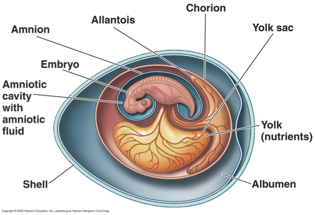

How do chicks breathe in eggs?
The embryo of birds does not have lungs. The egg is also not completely airtight, air keeps coming and going through it. The egg has a special type of membrane wrapped around it in the shape of an Allantois sausage
This membrane contains very fine blood vessels or blood vessels, which dilate when oxygen is received. It is only because of the allantois that the creatures are able to move from the sea to the land. Fish and amphibians or amphibians do not have allantois, but are found in the eggs of birds and reptiles. Mammals also have allantois, which later develop into the umbilical cord or umbilical cord.